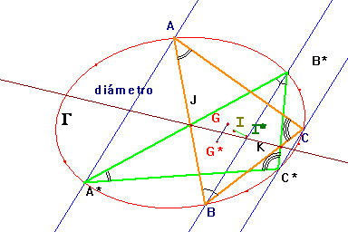
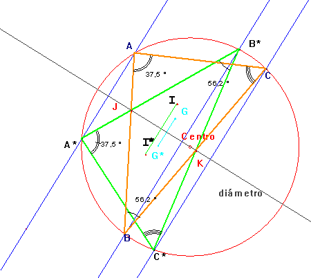
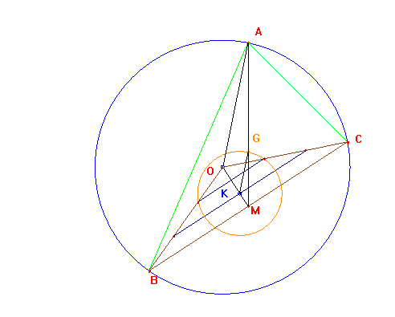
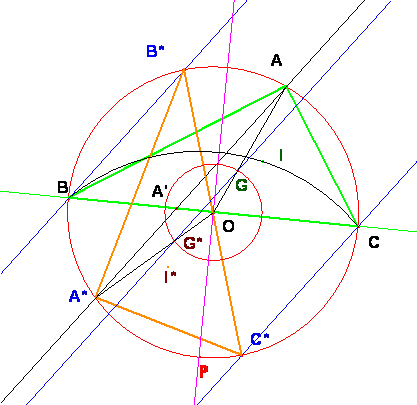

De
Investigación
Propuesto
por Juan Bosco Romero Márquez, profesor colaborador
de la Universidad de Valladolid
Problema 285.- Sea la circunferencia circunscrita a
un triángulo rectángulo en el vértice A. Consideremos una ceviana arbitraria AA´, donde A´ es su pie sobre el lado BC, y sea A*, el punto donde
corta la circunferencia circunscrita. Por los vértices B y C, trazamos
los segmentos BB* y CC* paralelos a AA´, y
donde B* y C* son los puntos donde estos segmentos corta al circunferencia
circunscrita cuyo centro es O.
Probar que :
a) El triángulo A*B*C* es
congruente o isométrico al triángulo ABC.
b) Si G y G* son los baricentros de los
triángulos ABC y A*B*C*, entonces el segmento GG* es
paralelo
a AA* y es 1/3 de AA*.¿Qué ocurre con los incentros
de esos triángulos con relación a AA´?
c) Al variar la ceviana
AA´ sobre el lado BC se construyen infinitos
triángulos congruentes a ABC.
Se pide :
c1)
Lugar geométrico descrito por todos los baricentros de esos triángulos
c2)
Lugar geométrico descrito por todos los incentros de
esos triángulos.
d) ¿Qué se podría decir si hacemos la
construcción anterior para los catetos del triángulo rectángulo anterior?
e) ¿Qué se podría decir de todo lo
anterior para un triángulo cualquiera, obtusángulo o acutángulo? Romero J.B. (2005):
Comunicación personal.
Solución
de Saturnino Campo
Ruiz, profesor del IES Fray Luis
de León de Salamanca.

a) Trazar paralelas a AA’ por los puntos B y C puede entenderse como proyectar desde
el punto del infinito de AA’ los
vértices B y C sobre la circunferencia circunscrita al triángulo ABC.
En una cónica cualquiera G, la involución de puntos definida sobre ella por la
proyección desde un punto cualquiera del plano es evidentemente una
proyectividad; si los puntos homólogos son pares de la forma (M, M*) el eje de esta proyectividad es
la recta que une los puntos MN*∩M*N
y además, esta recta es la polar del punto de proyección.
Toda involución sobre una cónica es la restricción a
ella de una homología armónica con centro el de la involución y eje su polar. En particular, si el punto de proyección está
en el infinito, la polar es el diámetro conjugado con la dirección definida por
las rectas MM* (pasa por el centro de la cónica) y la
proyección es una afinidad (transforma la recta del infinito en sí misma).

El punto medio de un segmento es el cuarto armónico de
sus extremos y el punto del infinito de la recta soporte del mismo; al
transformarse la recta del infinito en
sí misma, la proyección del punto medio de un segmento AB es el punto medio del segmento proyección
A*B*, y por tanto el baricentro G de ABC
se proyecta en el baricentro G* de
A*B*C* resultando de ello la recta GG* paralela a las recta de proyección MM*. (Véase problema 200 d, La cónica de los nueve puntos).
Si la cónica es una circunferencia, los diámetros
conjugados son perpendiculares y entonces
el diámetro definido por la proyección es la mediatriz de los segmentos MM*, resultando de ello que los
segmentos MN y M*N* son simétricos, y por tanto iguales, respecto de dicho
diámetro. Los triángulos inscritos son
simétricos respecto del diámetro perpendicular a la dirección de las rectas
paralelas. Con esto queda demostrado en un caso más general este primer apartado.
b) y c)
Lugar geométrico de los baricentros e incentros para
los triángulos inscritos en una circunferencia con dos vértices fijos y el otro
moviéndose sobre ella.
Comencemos por los baricentros.

Vamos a demostrar que el lugar
geométrico de los baricentros de estos triángulos inscritos es una
circunferencia cuyo radio es la tercera parte del de la circunscrita y con
centro el punto K baricentro del
triángulo OBC (O es el centro de la circunscrita).
Si al triángulo MOA
(donde M es el punto medio de BC) le aplicamos una homotecia de centro M y razón 1/3, se transforma en el triángulo MKG. En esta homotecia la circunferencia circunscrita ¬ de centro O¬ se transforma en la
circunferencia de centro K y radio KG. Esta circunferencia contiene a G y no depende de la posición de A, por ello el baricentro de cualquier
triángulo con BC fijos siempre estará
sobre ella, como queríamos probar.
Cuando BC es
un diámetro, el triángulo es rectángulo en A,
y los puntos O y K se confunden y están alineados los puntos O, G y A.
El triángulo AOA*
por una homotecia de centro O y
razón 1/3 pasa al triángulo GOG* de
lo que se deduce que el segmento GG*, como ya sabíamos paralelo a AA*, tiene una longitud igual a la
tercera parte de la de éste.
Para los incentros:
El lugar geométrico del incentro de un triángulo con dos vértices fijos B y C y el
otro A variable sobre un arco de circunferencia es otro arco de circunferencia
que pasa por los puntos fijos y tiene su centro en el punto medio P del arco BC
que no contiene el otro vértice.
El ángulo BIC
tiene amplitud f = 90 + ½a, con a=áng(BAC), por ello, el incentro
se mueve sobre el arco capaz de BC y
amplitud f.
El centro de este arco está
sobre la mediatriz de BC. Además,
desde él se ha de ver el segmento BC
con un ángulo igual a 2f. En el
cuadrilátero BACP el ángulo en P, suplementario del ángulo en A, mide 180-a que es, justamente igual a 2f. Así pues, P es el centro de ese arco.
De otra parte la proyección con rectas paralelas es
una simetría axial respecto al diámetro perpendicular, eje de dicha proyección.
El punto medio del arco BC se
transforma en el punto medio del arco B*C*.
De ahí que los puntos I e I* se corresponden en esa simetría y
por tanto I I*
es una recta paralela a las rectas de proyección, igual que lo es GG*.

d) y e)
La construcción para los catetos no se diferencia en
nada de la que se hace para la hipotenusa. Igualmente se encuentra la relación
entre el segmento de los baricentros y el segmento que une los vértices de los
ángulos rectos. El segmento de los baricentros es paralelo a las rectas de proyección.
Para cualquier otro tipo de triángulo no rectángulo ya
está visto también. No se verifica la relación de los segmentos que unen los
baricentros; esta es exclusiva para triángulos rectángulos. Y lo demás igual.